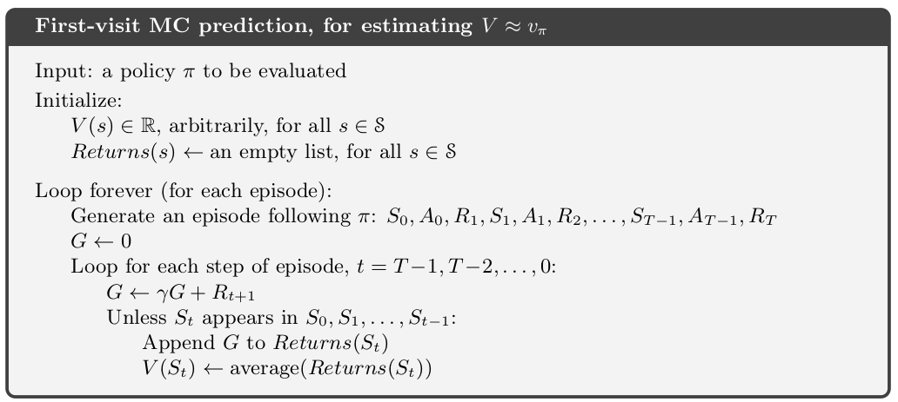
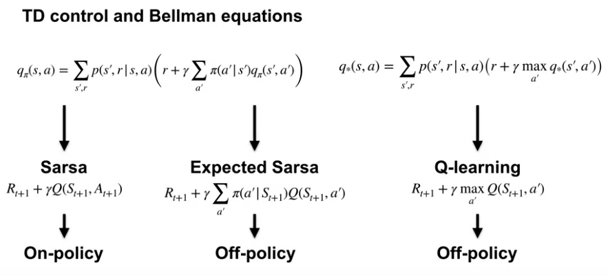
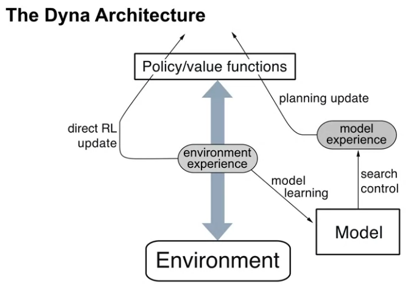
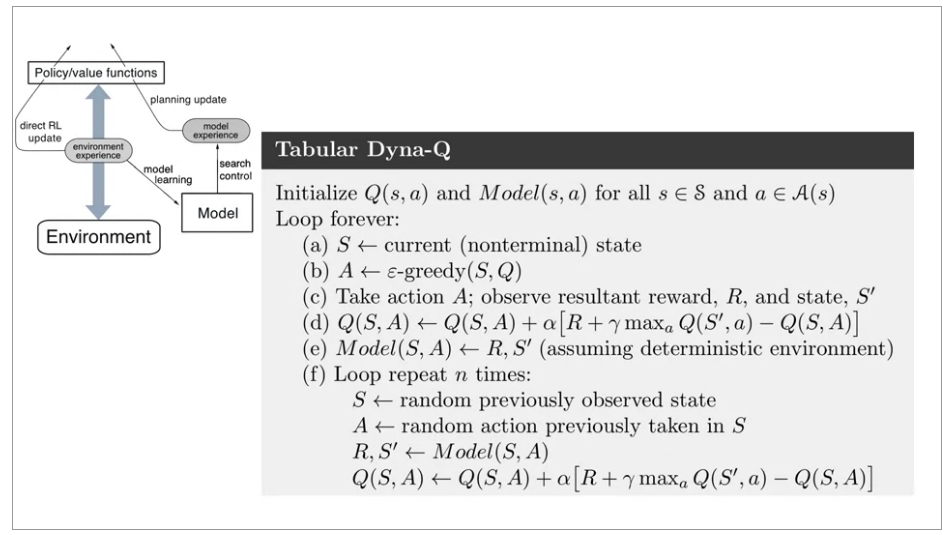
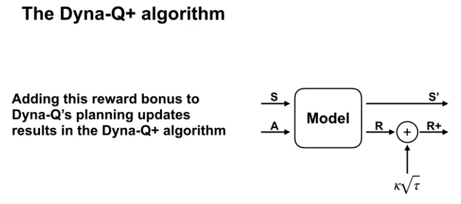
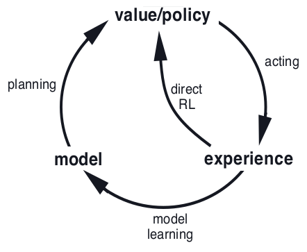

Reinforcement Learning Specialization - Coursera - course 2 - Sample-based Learning Methods
From University of Alberta. My notes on course 2.
- Course 2 - Week 1 - Monte-Carlo Methods for Prediction & Control
- Course 2 - Week 2 - Temporal Difference Learning Methods for Prediction
- Course 2 - Week 3 - Temporal Difference Learning Methods for Control
- Course 2 - Week 4 - Planning, Learning & Acting
- Text Book Part 1 Summary
Coursera website: course 2 - Sample-based Learning Methods of Reinforcement Learning Specialization
my notes on course 1 - Fundamentals of Reinforcement Learning, course 3 - Prediction and Control with Function Approximation, course 4 - A Complete Reinforcement Learning System (Capstone)
specialization roadmap - course 2 - Sample-based Learning Methods
course 2 - In Course 2, we built on these ideas and design algorithms for learning without a model of the world. We study three classes of methods designed for learning from trial and error interaction. We start with Monte Carlo methods and then move on to temporal difference learning, including Q learning. We conclude Course 2 with an investigation of methods for planning with learned models.
Week 1 - Monte-Carlo Methods for Prediction & Control
Week 2 - Temporal Difference Learning Methods for Prediction
Week 3 - Temporal Difference Learning Methods for Control
Week 4 - Planning, Learning & Acting
Course 2 - Week 1 - Monte-Carlo Methods for Prediction & Control
Module 1 Learning Objectives
Lesson 1: Introduction to Monte-Carlo Methods
- Understand how Monte-Carlo methods can be used to estimate value functions from sampled interaction
- Identify problems that can be solved using Monte-Carlo methods
- Use Monte-Carlo prediction to estimate the value function for a given policy.
Lesson 2: Monte-Carlo for Control
- Estimate action-value functions using Monte-Carlo
- Understand the importance of maintaining exploration in Monte-Carlo algorithms
- Understand how to use Monte-Carlo methods to implement a GPI algorithm
- Apply Monte-Carlo with exploring starts to solve an MDP
Lesson 3: Exploration Methods for Monte-Carlo
- Understand why exploring starts can be problematic in real problems
- Describe an alternative exploration method for Monte-Carlo control
Lesson 4: Off-policy learning for prediction
- Understand how off-policy learning can help deal with the exploration problem
- Produce examples of target policies and examples of behavior policies
- Understand importance sampling
- Use importance sampling to estimate the expected value of a target distribution using samples from a different distribution
- Understand how to use importance sampling to correct returns
- Understand how to modify the Monte-Carlo prediction algorithm for off-policy learning.
Lesson 1: Introduction to Monte Carlo Methods
Reading Chapter 5.0-5.5 (pp. 91-104) in the Reinforcement Learning textbook
Although a model is required, the model need only generate sample transitions, not the complete probability distributions of all possible transitions that is required for dynamic programming (DP).
Video What is Monte Carlo by Martha
By the end of this video you will be able to understand how Monte Carlo methods can be used to estimate value functions from sampled interaction and identify problems that can be solved using Monte Carlo methods.
Video Using Monte Carlo for Prediction by Martha
By the end of this video, you will be able to use Monte Carlo prediction to estimate the value function for a given policy.

Lesson 2: Monte Carlo for Control
Video Using Monte Carlo for Action Values by Adam
By the end of this video, you’ll be able to estimate action-value functions using Monte Carlo and understand the importance of maintaining exploration in Monte Carlo algorithms.
Video Using Monte Carlo methods for generalized policy iteration by Adam
By the end of this video, you will understand how to use Monte Carlo methods to implement a generalized policy iteration GPI algorithm.

Video Solving the BlackJack Example by Adam
By the end of this video, you’ll be able to apply Monte Carlo with Exploring Starts to solve an example MDP.
Lesson 3: Exploration Methods for Monte Carlo
Video Epsilon-soft policies by Adam
By the end of this video you will understand why exploring starts can be problematic in real problems and you will be able to describe an alternative expiration method to maintain exploration in Monte Carlo control.
Lesson 4: Off-policy Learning for Prediction
Video Why does off-policy learning matter? by Martha
By the end of this video you will be able to understand how off policy learning can help deal with the expiration problem. You will also be able to produce examples of Target policies and examples of behavior policies.
The key points to take away from today are that off policy learning is another way to obtain continual exploration. The policy that we are learning is called the target policy and the policy that we are choosing actions from is the behavior policy.
Video Importance Sampling by Martha
By the end of this video, you will be able to use importance sampling to estimate the expected value of a target distribution using samples from a different distribution.
Video Off-Policy Monte Carlo Prediction by Martha
By the end of this video, you will be able to understand how to use important sampling to correct returns, and you will understand how to modify the Monte Carlo prediction algorithm for off-policy learning.
Video Emma Brunskill: Batch Reinforcement Learning
Video Week 1 Summary by Martha
Reading Chapter 5.10 (pp. 115-116) in the Reinforcement Learning textbook
Course 2 - Week 2 - Temporal Difference Learning Methods for Prediction
Module 2 Learning Objectives
Lesson 1: Introduction to Temporal Difference Learning
- Define temporal-difference learning
- Define the temporal-difference error
- Understand the TD(0) algorithm
Lesson 2: Advantages of TD
- Understand the benefits of learning online with TD
- Identify key advantages of TD methods over Dynamic Programming and Monte Carlo methods
- Identify the empirical benefits of TD learning
Lesson 1: Introduction to Temporal Difference Learning
Reading Chapter 6-6.3 (pp. 116-128) in the Reinforcement Learning textbook
Video What is Temporal Difference (TD) learning? by Adam
By the end of this video, you’ll be able to define temporal difference learning, define the temporal difference error, and understand the TD(0) algorithm.

Video Rich Sutton: The Importance of TD Learning by Richard Sutton
Lesson 2: Advantages of TD
Video The advantages of temporal difference learning by Martha
By the end of this video, you will be able to understand the benefits of learning online with TD and identify key advantages of TD methods over dynamic programming and Monte Carlo.
Video Comparing TD and Monte Carlo by Adam
By the end of this video, you’ll be able to identify the empirical benefits of TD Learning.
Video Andy Barto and Rich Sutton: More on the History of RL
Video Week 2 Summary by Adam
Assignment
Policy Evaluation in Cliff Walking Environment
notebooks in github
Course 2 - Week 3 - Temporal Difference Learning Methods for Control
Module 3 Learning Objectives
Lesson 1: TD for Control
- Explain how generalized policy iteration can be used with TD to find improved policies
- Describe the Sarsa control algorithm
- Understand how the Sarsa control algorithm operates in an example MDP
- Analyze the performance of a learning algorithm
Lesson 2: Off-policy TD Control: Q-learning
- Describe the Q-learning algorithm
- Explain the relationship between Q-learning and the Bellman optimality equations.
- Apply Q-learning to an MDP to find the optimal policy
- Understand how Q-learning performs in an example MDP
- Understand the differences between Q-learning and Sarsa
- Understand how Q-learning can be off-policy without using importance sampling
- Describe how the on-policy nature of Sarsa and the off-policy nature of Q-learning affect their relative performance
Lesson 3: Expected Sarsa
- Describe the Expected Sarsa algorithm
- Describe Expected Sarsa’s behaviour in an example MDP
- Understand how Expected Sarsa compares to Sarsa control
- Understand how Expected Sarsa can do off-policy learning without using importance sampling
- Explain how Expected Sarsa generalizes Q-learning
Lesson 1: TD for Control
Reading Chapter 6.4-6.6 (pp. 129-134) in the Reinforcement Learning textbook


Video Sarsa: GPI with TD by Martha
By the end of this video, you’ll be able to explain how generalized policy iteration can be used with TD to find improved policies, as well as describe the Sarsa control algorithm
Video Sarsa in the Windy Grid World by Adam
By the end of this video, you will understand how the Sarsa control algorithm operates in an example MDP. You will also gain experience analyzing the performance of a learning algorithm.
Lesson 2: Off-policy TD Control: Q-learning
Video What is Q-learning? by Martha
By the end of this video, you will be able to describe the Q-learning algorithm, and explain the relationship between Q-learning and the Bellman optimality equations.
Video Q-learning in the Windy Grid World by Adam
By the end of this video, you will gain insight into how Q-Learning performs in an example MDP. And gain experience comparing the performance of multiple learning algorithms on a single MDP.
Video How is Q-learning off-policy? by Martha
By the end of this video, you will understand how Q-learning can be off-policy without using important sampling and be able to describe how learning on-policy or off-policy might affect performance in control.
Lesson 3: Expected Sarsa
Video Expected Sarsa by Martha
By the end of this video, you will be able to explain the expected Sarsa algorithm.
Video Expected Sarsa in the Cliff World by Adam
By the end of this video, you will be able to describe expected Sarsas’s behavior in an example MDP and empirically compare expected Sarsa and Sarsa.
Video Generality of Expected Sarsa by Martha
By the end of this video, you will understand how Expected Sarsa can do off-policy learning without using importance sampling and explain how Expected Sarsa generalizes Q-learning.
Video Week 3 summary by Adam

Sarsa uses a sample based version of the Bellman equation. It learns Q-pi.
Q-learning uses the Bellman optimality equation. It learns Q-star.
Expected sarsa uses the same Bellman equation as Sarsa, but samples it differently. It takes an expectation over the next action values.
What’s the story with on-policy and off-policy learning?
Sarsa is a on-policy algorithm that learns the action values for the policy it’s currently following. Q-learning is an off-policy algorithm that learns the optimal action values. And Expected Sarsa is both an on-policy and an off-policy algorithm that can learn the action values for any policy.
Assignment
Q-Learning and Expected Sarsa
notebooks in github
Course 2 - Week 4 - Planning, Learning & Acting
Module 4 Learning Objectives
Lesson 1: What is a model?
- Describe what a model is and how they can be used
- Classify models as distribution models or sample models
- Identify when to use a distribution model or sample model
- Describe the advantages and disadvantages of sample models and distribution models
- Explain why sample models can be represented more compactly than distribution models
Lesson 2: Planning
- Explain how planning is used to improve policies
- Describe random-sample one-step tabular Q-planning
Lesson 3: Dyna as a formalism for planning
- Recognize that direct RL updates use experience from the environment to improve a policy or value function
- Recognize that planning updates use experience from a model to improve a policy or value function
- Describe how both direct RL and planning updates can be combined through the Dyna architecture
- Describe the Tabular Dyna-Q algorithm
- Identify the direct-RL and planning updates in Tabular Dyna-Q
- Identify the model learning and search control components of Tabular Dyna-Q
- Describe how learning from both direct and simulated experience impacts performance
- Describe how simulated experience can be useful when the model is accurate
Lesson 4: Dealing with inaccurate models
- Identify ways in which models can be inaccurate
- Explain the effects of planning with an inaccurate model
- Describe how Dyna can plan successfully with a partially inaccurate model
- Explain how model inaccuracies produce another exploration-exploitation trade-off
- Describe how Dyna-Q+ proposes a way to address this trade-off
Lesson 5: Course wrap-up
Lesson 1: What is a model?
Reading Chapter 8.1-8.3 (pp. 159-166) in the Reinforcement Learning textbook
Model-based methods rely on planning as their primary component, while model-free methods primarily rely on learning.
Video What is a Model? by Martha
By the end of the video, you will be able to describe a model and how it can be used, classify models as distribution models or sample models, and identify when to use a distribution model or sample model.
Video Comparing Sample and Distribution Models by Martha
By the end of this video, you will be able to describe the advantages and disadvantages of sample models and distribution models, and you will also be able to explain why sample models can be represented more compactly than distribution models.
Lesson 2: Planning
Video Random Tabular Q-planning by Martha
By the end of this video, you’ll be able to explain how planning is used to improve policies and describe random-sample one-step tabular Q-planning.
Lesson 3: Dyna as a formalism for planning
Video The Dyna Architecture by Adam
By the end of this video, you will be able to understand how simulate experience from the model differs from interacting with the environment. You will also understand how the Dyna architecture mixes direct RL updates and planning updates.

Video The Dyna Algorithm by Adam
By the end of this video, you should be able to describe how Tabular Dyna-Q works. You will also be able to identify the direct-RL, planning updates in Tabular Dyna-Q, and identify the model learning and search control components of Tabular Dyna-Q.

Video Dyna & Q-learning in a Simple Maze by Adam
By the end of this video you will be able to describe how learning from both environment-real and model experience impacts performance. You will also be able to explain how an accurate model allows the agent to learn from fewer environment interactions.
Lesson 4: Dealing with inaccurate models
Video What if the model is inaccurate? by Martha
By the end of this video you will be able to identify ways in which models can be inaccurate, explain the effects of planning with an inaccurate model, and describe how Dyna can plan successfully with an incomplete model.
Video In-depth with changing environments by Adam
By the end of this video, you’ll be able to explain how model inaccuracies produce another exploration-exploitation trade-off, and describe how Dyna-Q+ addresses this trade-off.

Video Drew Bagnell: self-driving, robotics, and Model Based RL
Video week 4 summary by Martha
Assignment
Dyna-Q and Dyna-Q+
notebooks in github
Chapter summary Chapter 8.12 (pp. 188)

Planning, acting, and model-learning interact in a circular fashion (as in the figure above), each producing what the other needs to improve; no other interaction among them is either required or prohibited.
Text Book Part 1 Summary
For a summary of what we’ve covered in the specialization so far, read: pp. 189-191 in Reinforcement Learning: an introduction .
All of the methods we have explored so far in this book have three key ideas in common: first, they all seek to estimate value functions; second, they all operate by backing up values along actual or possible state trajectories; and third, they all follow the general strategy of generalized policy iteration (GPI), meaning that they maintain an approximate value function and an approximate policy, and they continually try to improve each on the basis of the other. These three ideas are central to the subjects covered in this book. We suggest that value functions, backing up value updates, and GPI are powerful organizing principles potentially relevant to any model of intelligence, whether artificial or natural.